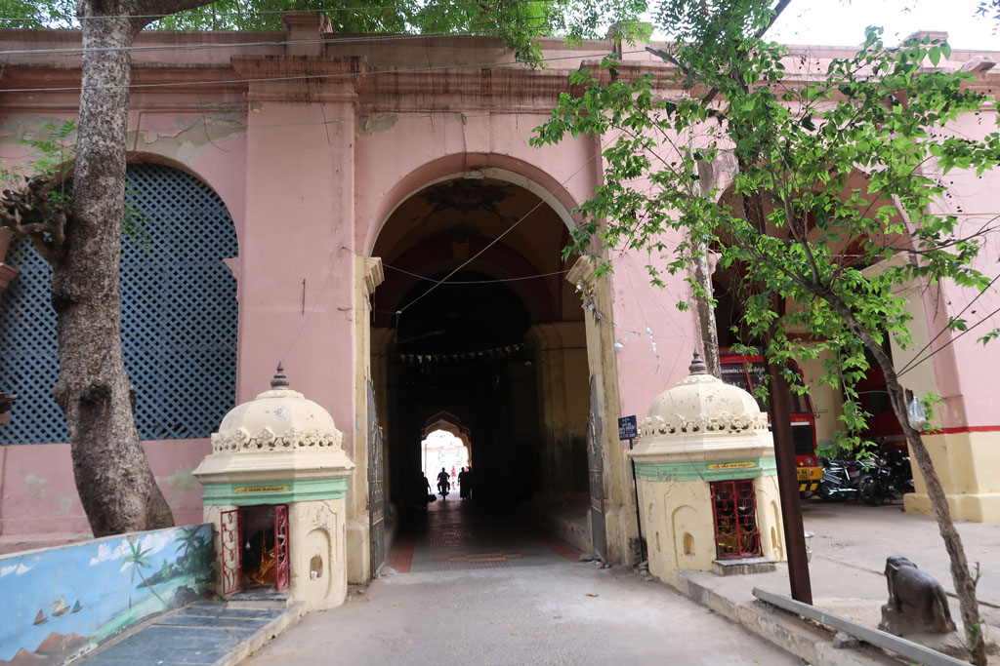
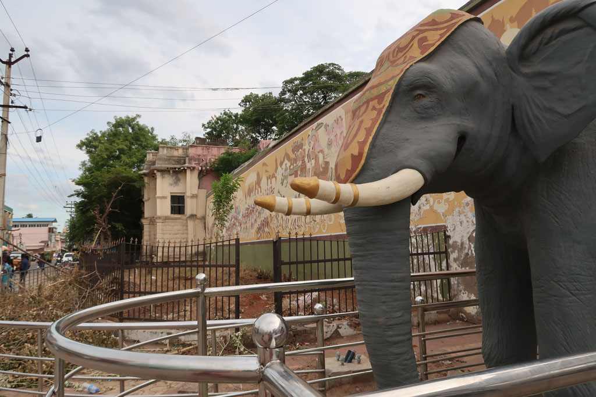

Tamil Nadu / Vers Tanjore
7h00 Réveil en douceur
8h00 On se dirige à pieds vers la gare routière. Après avoir fait le plein d’eau direction Tanjore.
9h30 Arrivés à Tanjore, nous prenons un tuk tuk pour notre hôtel.
10h00 Nous ressortons en direction de la poste. Après avoir fait longuement la queue nous de devons évidemment changer de guichet. On achète quelques Ramboutans sur la route.
Nous marchons ensuite vers la ville, c’est le jour des soldes, il y a foule.
12h00 repas dans une cantine, non loin de la gare routière. Masala butter paneer + chapatis, rice (cajou, grenade, ananas), onion uttapam, mushroom dosa, water, juice 586 R.
13h30 retour en tuk tuk pour une petite sieste


15h00 tuk tuk pour le palais, visite de ce palais décrépi et de toutes ses annexes (payantes) L’endroit est joli on aimerait pouvoir se perdre dans les coursives et bâtiments inaccessibles. Sans compter sur la coupure de courant qui nous empêche de voir nombre de vitrines.
17h30 on sort du musée / palace et nous partons déambuler dans les rues. café x2, jus de fruits x4
18h30 on prend finalement un tuk tuk pour le dernier kilomètre.
19h30 compte et journal
20h00 direction le restaurant de l’hôtel. Veg noodles, chapatis x2, masala dosa x2 lemon juice x2, lemon soda, plain soda 380R
Retour à la chambre après avoir profité du jardin.